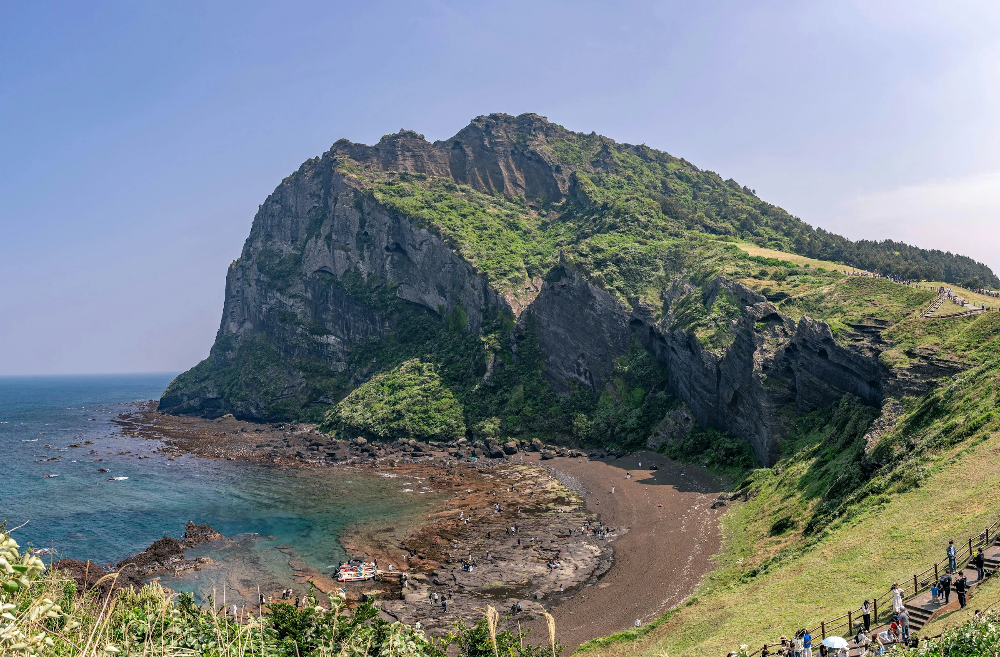
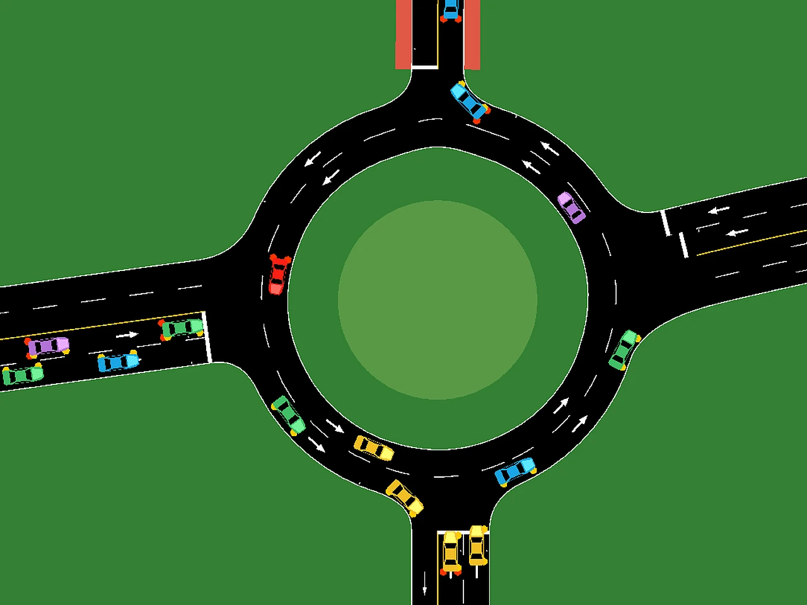
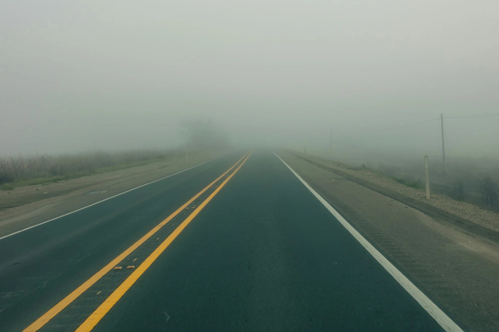

JEJU, SOUTH KOREA · AUTONOMOUS DRIVING
Seongsan
Driving.
성산 저시정 자율주행 데이터셋
같은 도로, 달라지는 관측.
성산의 교차로에서 자율주행의 판단을 살펴봅니다.
환경과 수집 설계를 소개하는 초안입니다. 최종 영상·시정 설정·평가 결과는 준비 중입니다.
WHY SEONGSAN
왜 성산에서
자율주행을 연구할까요?
관광 이동 수요. 제주관광공사의 이동통신 데이터 기반 집계에서 성산해안은 2025년 5월 서귀포시 방문객 상위 블록 2위에 올랐습니다. [1] 관광지와 숙박시설을 오가는 이동을 배경으로, 성산의 도로를 연구 대상으로 삼았습니다.
실제 자율주행 노선. 관광형 자율주행 버스 ‘일출봉GO’는 섭지코지·휘닉스 아일랜드와 성산항 일대를 연결합니다. [2] 이 서비스 노선을 참고해, 회전교차로·교차로·합류가 있는 핵심 구간을 SUMO 환경으로 구성했습니다.

THE QUESTION
하지만, 시야가
좁아진다면?
해안 지역인 성산에서는 안개·해무로 인한 저시정 상황도 고려해야 합니다. [3] 성산 관측소에서는 시정 1km 미만이 연평균 16.8일 관측됐습니다. [4] 이렇게 주변 차량이 실제로 존재해도 보이지 않는다면, 자율주행의 판단과 주행 결과는 어떻게 달라질까요?
실제 State와 Policy의 Observation을 함께 기록해 그 차이를 살펴봅니다.

성산 촬영·팀 주행 영상이 아닌 악천후 시야 예시입니다. 비와 안개는 서로 다른 기상 조건입니다.
01 / DRIVING VIDEO
주행 영상
주변 차량과의 상호작용을 포함한
전체 경로 주행 영상입니다.

02 / ROAD ENVIRONMENT
도로 구성
회전교차로·합류·신호·무신호 교차로를 구현했습니다.
구간을 선택하면 상세 화면과 주행 과제를 확인할 수 있습니다.
번호는 구간 탐색을 위한 개략 위치입니다. 실제 지도는 선정 구간 참고용입니다.
SCENE 01 / 04
회전 차량 사이로 진입하기
회전 중인 차량과의 간격을 고려해 진입 시점과 속도를 결정합니다.

DECISION진입 · 양보 · 속도 조절
도로·일반 차량 구성 자세히 보기
선정 구간
전체 관광 노선 중 교차로·회전교차로·진입로가 포함된 핵심 구간을 모방했습니다. 지도 전체 관광 노선과 시뮬레이션 구현 범위는 구분합니다.
Traffic 구성
최종 공개 시 일반 차량 모델과 혼합 비율, 유입량, Traffic Seed와 교통량 배수의 기준을 함께 제시합니다. AV의 Action에 영향을 주는 충분한 상호작용이 평가 대상입니다.
03 / LIMITED VISIBILITY
저시정 관측 설정
관측 범위에 따라 Policy에 전달되는 차량 정보가 달라집니다.
슬라이더로 감지 차량의 변화를 확인할 수 있습니다.

차량 배치는 고정된 개념도입니다. 슬라이더 값은 실제 감지거리(m)나 안개 농도를 의미하지 않습니다.
CLOSED-LOOP COMPARISON
일반·저시정 조건 비교
Policy·경로·교통 생성 조건을 맞춰 시정 조건별 주행을 비교할 예정입니다.
현재 비교 영상은 등록되지 않았습니다.
Observation · Action · 학습 구성
Observation
자차·주변 차량, 교차로 접근 차량, 도로·경로·신호 정보를 구성합니다. 저시정의 감지거리, 미감지 입력 처리와 신호·V2I 제한 범위는 최종 설정에 맞춰 명시합니다.
Action & Policy
PPO Policy가 가속도 −4 / 0 / +3 m/s²와 오른쪽 / 유지 / 왼쪽의 9개 조합 중 하나를 선택합니다. 최종 Reward 항목·가중치는 확정 후 공개합니다.
04 / THE DATASET
데이터셋 구성
State·Observation·Action·Reward와 실행 결과를
전이 단위로 기록합니다.
State & Observation
실제 환경과 Policy 입력을 구분
sₜ · oₜAction
선택한 Action과 전달한 명령
aₜReward & Events
Reward, 실제 이동과 종료 이벤트
rₜ · eventsNext State
다음 State와 Observation
sₜ₊₁ · oₜ₊₁Policy 체크포인트 · Traffic Seed · 시정 조건
생성 조건을 식별하고 에피소드 단위로 주행을 연결합니다.
스키마와 수집 규모
| 구분 | 주요 기록 | 목적 |
|---|---|---|
| 실제 State | 차량 ID·위치·속도·차로·방향·실제 신호 | 환경 상황 재구성 |
| Observation | Policy 입력·감지 차량·관측 신호 | 관측 정보 확인 |
| Action·결과 | 선택 명령·전후 차로·Reward·충돌·도착 | 판단과 실행 연결 |
| 종료 | terminated · truncated · 종료 사유 | 환경 종료·시간 제한 구분 |
최종 에피소드·전이 수, 시정별 구성과 저장 용량은 집계 후 공개합니다. 수업의 수집 목표 10⁷개 이상은 달성 실적과 구분하며 집계 단위도 함께 명시합니다.
05 / RESULTS & ANALYSIS
평가 결과
완주율·충돌률·위반율과 완주 이동시간을 비교합니다.
평가 수치는 집계 후 추가할 예정입니다.
| 관측 조건 | 완주율 | 충돌률 | 위반율 | 완주 이동시간 |
|---|---|---|---|---|
| 일반 조건 | — | — | — | — |
| 저시정 조건 | — | — | — | — |
평가 준비 중 · ‘—’는 0이 아닙니다. 이동시간은 완주한 주행 기준이며 Policy·Seed·교통량·관측 설정·반복 수를 함께 공개합니다.
평가 기준과 문제 해결 과정
기본 주행 목표는 Collision Rate < 5%입니다. 충돌한 에피소드 수를 전체 평가 에피소드 수로 나누어 집계합니다. 비정상 정지·경로 실패·시간 초과·Teleport·시뮬레이터 오류도 확인합니다.
실제 문제 사례는 원인·수정·동일 조건 재평가 결과와 연결해 추가할 예정입니다. 아직 검증하지 않은 개선 효과는 제시하지 않습니다.
06 / RESOURCES
코드 및 자료
코드 · 발표자료 · 데이터
실행 명령 보기
제공된 W9 코드 기준입니다. final_project 폴더에서 실행합니다. SUMO 1.27.1 · Python 3.11 확인 환경.
pip install -r requirements.txt
python view_policy_gui.py --checkpoint checkpoints/seongsan_w9_3000k.pt --map pluslane_v4 --traffic 3